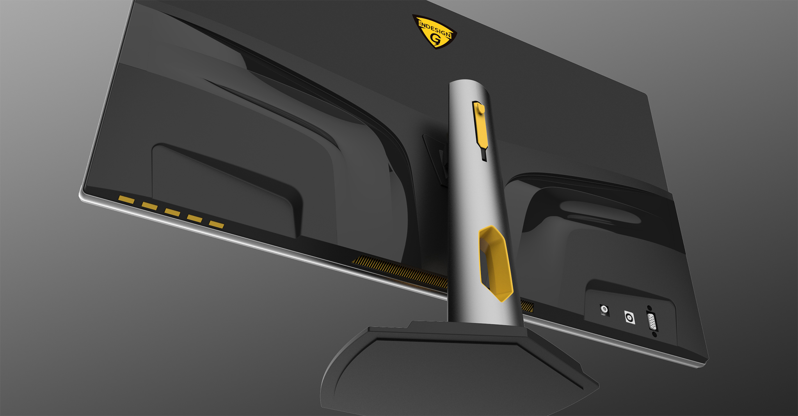

<!DOCTYPE html>
<html lang="en">

<head>
    <meta charset="UTF-8">
    <meta name="viewport" content="width=device-width, initial-scale=1.0">
    <meta http-equiv="X-UA-Compatible" content="ie=edge">

    <!-- 連結Bootstrap.css -->
    <link rel="stylesheet" href="https://stackpath.bootstrapcdn.com/bootstrap/4.1.1/css/bootstrap.min.css" integrity="sha384-WskhaSGFgHYWDcbwN70/dfYBj47jz9qbsMId/iRN3ewGhXQFZCSftd1LZCfmhktB"
        crossorigin="anonymous">
    <!-- 客製化Bootstrap CSS -->
    <!-- 使用font awesome -->
    <link rel="stylesheet" href="https://use.fontawesome.com/releases/v5.1.0/css/all.css" integrity="sha384-lKuwvrZot6UHsBSfcMvOkWwlCMgc0TaWr+30HWe3a4ltaBwTZhyTEggF5tJv8tbt"
        crossorigin="anonymous">
    <link href="https://fonts.googleapis.com/css?family=Ovo|Quicksand|Righteous" rel="stylesheet">
    <!-- css -->
    <link rel="stylesheet" href="../css/basic.css">
    <link rel="stylesheet" href="../css/reset.css">
    <link rel="stylesheet" href="../css/style.css">
    <link rel="stylesheet" href="../css/style-drawing.css">
    <link rel="stylesheet" href="../css/style-product.css">

    <!-- 連結Bootstrap.js -->
    <script src="https://code.jquery.com/jquery-3.3.1.min.js" integrity="sha256-FgpCb/KJQlLNfOu91ta32o/NMZxltwRo8QtmkMRdAu8="
        crossorigin="anonymous"></script>
    <script src="https://cdnjs.cloudflare.com/ajax/libs/popper.js/1.14.3/umd/popper.min.js" integrity="sha384-ZMP7rVo3mIykV+2+9J3UJ46jBk0WLaUAdn689aCwoqbBJiSnjAK/l8WvCWPIPm49"
        crossorigin="anonymous"></script>
    <script src="https://stackpath.bootstrapcdn.com/bootstrap/4.1.1/js/bootstrap.min.js" integrity="sha384-smHYKdLADwkXOn1EmN1qk/HfnUcbVRZyYmZ4qpPea6sjB/pTJ0euyQp0Mk8ck+5T"
        crossorigin="anonymous"></script>
    <!-- 連結js -->
    <script src="../js/main.js"></script>
    <script src="../js/drawing.js"></script>
    <title>Gaming Monitor | Jordan Tsneg</title>
</head>


<body>
    <!-- nav start -->
    <nav class="navbar">

        <div>
            
        </div>
    </nav>
    <div id="navbar-top" class="flex">
        <div id="navbar-top-logo"></div>
        <div class="navbar-pages-box flex">
            <ul class="list-inline">
                <li class="list-inline-item pages-small">
                    <a href="../index.html">Home</a>
                </li>
                <li class="list-inline-item pages-small">
                    <a href="../page/aboutme.html">About</a>
                </li>
                <li class="list-inline-item pages-border">
                    <a href="../page/product.html">Product</a>
                </li>
                <li class="list-inline-item pages-small">
                    <a href="../page/design.html">Design</a>
                </li>
                <li class="list-inline-item pages-small">
                    <a href="../page/uiux.html">UI & UX</a>
                </li>
                <li class="list-inline-item pages-small">
                    <a href="../page/drawing.html">Painting</a>
                </li>

            </ul>
        </div>
    </div>

    <div class="menu">
        <div>
            
        </div>
        <div id="menu-table" class="">
            <div class="menu-list">
                <p><a href="../index.html">Home</a></p>
                <p><a href="../page/aboutme.html">About</a></p>
                <p><a href="../page/product.html">Product</a></p>
                <p><a href="../page/design.html">Design</a></p>
                <p><a href="../page/uiux.html">UI & UX</a></p>
                <p><a href="../page/drawing.html">Painting</a></p>
            </div>
        </div>
        <div class="menu-name">
            <span style="font-size: 6px">Product by</span>
            <span style="font-size: 16px">Jordan Tseng</span>
        </div>
    </div>
    <div class="dark-cover"></div>
    <div class="up">
        <a id="scrollupBtn" href="#header">
            
        </a>
    </div>

    <!-- nav end -->
    <!-- Header Start -->
    <header id="header" class="products-item-header flex-column header-bg-gm">
        <h1>Gaming Monitor</h1>
        <h2>OTS Project for client</h2>
    </header>
    <div id="section1" class="products-item-story-box flex-center-center position-re">
        <div class="products-item-story ">
            <h3>Story</h3>
            <p>
                The frist gaming project I did in Foxconn.I used the element of wings on robort to be the main design
                on the rear cover.Wish the unique shape can be the spotlight in the shop.
                <br>
                <br>
                Also considering the senario of user palying computer game,they maight have some requirement which we
                did some brainstroming before design.
            </p>
        </div>
        <div class="products-item-line"></div>
        <div class="products-item-story ">
            <h3>Project Goals</h3>
            <ul class="flex-column">
                <li>
                    Designing a unique shape but low cost gaming monitor for client to get the order.
                </li>
                <li>
                    Knowing all the element we need on monitor, including venting hole, stand's dimension even electric
                    board.
                </li>
            </ul>
            </p>
        </div>
    </div>
    <div id="section2" class="products-item-box flex-center-center position-re">
        <h5>Product 3 sides</h5>
        <div class="products-item-bg position-ab"></div>
        <div class="products-item-line"></div>
        <div id="product-items-first-box">
            
        </div>
    </div>
    <div id="section3" class="products-item-box flex-center-center position-re">
        <div class="product-detail-box flex">
            <div class="product-scenario-content">
                <p>
                    In the design stage, our team member discussed which manufacturing process we need, seperate
                    different process.We wanted make a propose include many kind of choose.
                    <br>
                    <br>
                    There was an another training for me is my design need to be hard to make 3D model, so you can see
                    on the rear cover I puted two cave shape which not only reflash the light but also gave me a big
                    challenge.
                </p>
            </div>
            
        </div>
    </div>
    <div id="section4" class="products-item-box flex-column position-re">
        <div class="section-line"></div>
        <h1>Bottom Side Detail</h1>
        <div class="product-detail-box flex-column">
            
            <p>
                On this view,you can see I use yellow for venting hole , keypad and the stand.Don;t worry about it
                become to mess,because there is a
                aluminum extrusion frame provide a shading function from the front side view.
                <br>
                <br>
                In brainstroming, we thought user need a earphone hanger and a cable drop, cause in this days user
                really care about their table neatness that why iMac is always popular than others.So I put a shield
                hole on it.
                <br>
                <br>

            </p>
        </div>
    </div>
    <div id="section5" class="products-item-box flex-column position-re section-bg-gm"></div>
    <div id="section6" class="products-item-box flex-column position-re">
        <div class="product-detail-box flex-column">
            <div class="product-detail-pic-box flex">
                <div class="gm-pic-6"></div>
                <div class="gm-pic-7"></div>
            </div>
            <p>
                From this two pictures,you can see the stand is also a shield shape,I wanted to use it element to make
                a strong
                image construction for gaming.
                <br>
                <br>
                And on the center of stand,there is a y shape of light bar.It will light up when user turn on the
                power.Because the signal is come from top, it also can change into different color for different mode
                like playing cs or losing blood.
            </p>
        </div>
    </div>
    <!-- Footer Start -->
    <footer id="footer">
        <div class="footmenu">
            <ul class="footmenu-list">
                <li class="footmenu-item">
                    <a href="../index.html">Home</a>
                </li>
                <li class="footmenu-item">
                    <a href="../page/aboutme.html">About</a>
                </li>
                <li class="footmenu-item">
                    <a href="../page/product.html">Product</a>
                </li>
                <li class="footmenu-item">
                    <a href="../page/design.html">Design</a>
                </li>
                <li class="footmenu-item">
                    <a href="../page/uiux.html">UI & UX</a>
                </li>
                <li class="footmenu-item">
                    <a href="../page/drawing.html">Painting</a>
                </li>

            </ul>
        </div>
        <div class="contect-me text-center font16">
            <p class="font14">Contect Me</p>
        </div>
        <div class="footSns">
            <ul class="footSns-list text-center">
                <li class="footSns-item">
                    <!-- target="_blank"是新開頁面 -->
                    <a href="https://www.facebook.com/profile.php?id=100005765470193" target="_blank">
                        <i id="icon-socialmedia-facebook" class="fab fa-facebook-square"></i>
                    </a>
                </li>
                <li class="footSns-item">
                    <a href="https://www.linkedin.com/in/ting-chun-tseng-110716b9/" target="_blank">
                        <i id="icon-socialmedia-linkedin" class="fab fa-linkedin"></i>
                    </a>
                </li>
                <li class="footSns-item">
                    <a href="#">
                        <i id="icon-socialmedia-instagram" class="fab fa-instagram" target="_blank"></i>
                    </a>
                </li>
            </ul>
        </div>
        <!-- <div style="clear:both"></div> -->

    </footer>
    <!-- Footer End -->

</body>

</html>